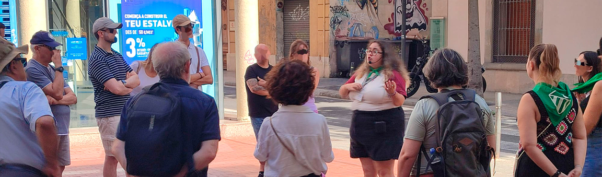
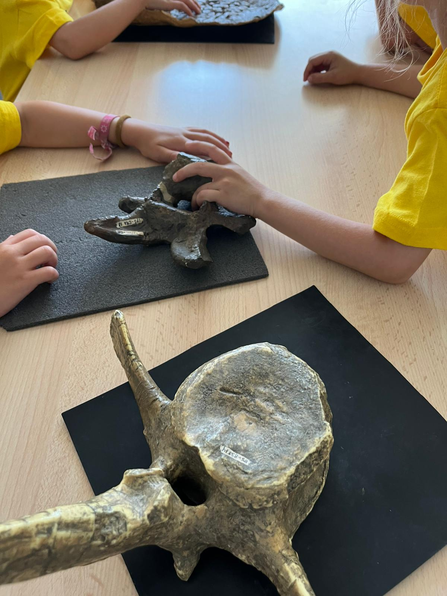

Educación y cultura
Es la principal línea de trabajo de ARCA TEMÁTICA. Preparamos actividades para conocer el patrimonio, la historia y el entorno, pensadas para personas de todas las edades.
Cada actividad se adapta a la edad, los conocimientos y las necesidades del grupo, tanto si es una escuela como una entidad, un ayuntamiento o un grupo de familias.

Talleres y actividades
- Talleres didácticos
Para aprender observando, tocando y experimentando.
- Actividades extraescolares
Propuestas continuadas durante el curso.
- Casales temáticos
Casales de vacaciones con un hilo conductor.
- Actividades a medida
Cuando lo que se necesita no encaja en ninguna propuesta existente.
Visitas
- Visitas guiadas
Por museos, espacios patrimoniales y núcleos urbanos.
- Visitas guiadas teatralizadas
Con personajes que explican la historia en primera persona.
Materiales y formación
- Material didáctico
Fichas y recursos para trabajar en el aula.
- Material informativo y divulgativo
Folletos, paneles y contenidos para explicar un espacio.
- Campañas educativas y culturales
Programas para instituciones y ayuntamientos.
- Formación de educadores
Sesiones para docentes y monitores.
-

Taller didáctico -

Visita teatralizada -
Material informativo
¿Tienes un grupo o una idea? Cuéntanos qué necesitas y te preparamos una propuesta a medida.